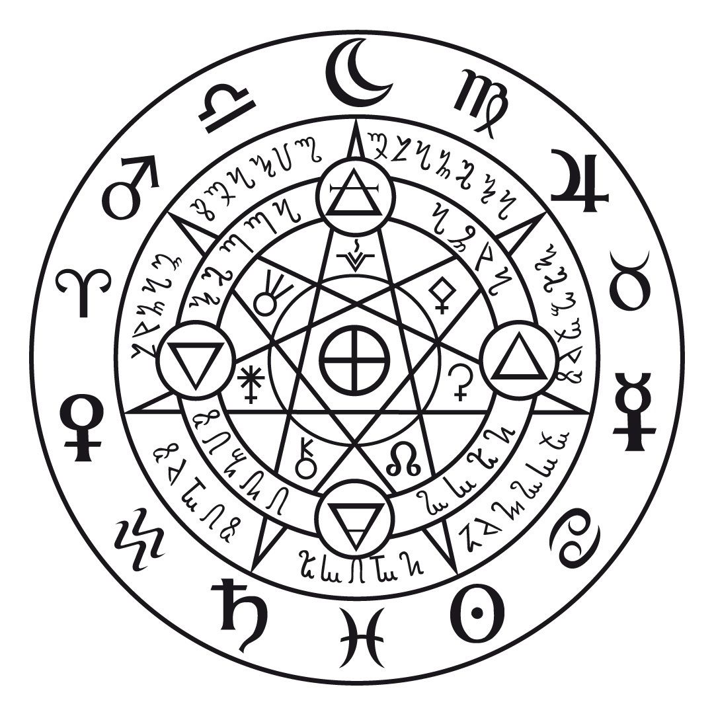

LAS CASAS
Las casas astrológicas son una parte importante de la astrología que puede ayudar a comprender mejor tu manera de relacionarte en todos los aspectos de tu vida, como el dinero, el amor, el trabajo y la familia. El círculo de los 12 signos del zodíaco está dividido en 12 sectores de existencia también llamados “casas astrológicas”

CONEXIONES
En una carta natal, que es un mapa del cielo en el momento exacto de nuestro nacimiento, los planetas se colocan en diferentes posiciones dentro de los signos zodiacales y casas astrológicas. Cuando dos o más planetas forman ciertos ángulos entre sí, crean aspectos que pueden ser considerados armónicos o desafiantes

LOS PLANETAS
Los planetas se utilizan para interpretar la personalidad y el destino de una persona. En la astrología, se consideran 11 planetas, incluyendo la Luna, Plutón y Quirón. Cada planeta representa diferentes aspectos del ser humano, como la vitalidad, las emociones, la comunicación, el amor, la energía y la pasión.